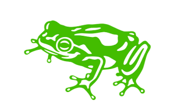

frog design
I have had the oppertunity working as a UX designer with frog design, part of Capgemini Invent from October 2021 until now. During my time at frog, I have worked on several external and internal projects.
I worked in a team of two Human Centred Designers with the client - New South Wales Electoral Commission in Sydney, Australia. The HCD project had an aim to gain a deeper understanding of client's external stakeholders, validate business requirement, access impact of the requirements on the current build and uncover insights towards future opportunities.
To meet the objectives above, following activities were performed:
User flow
User flows were developed based on key business requirements to surface any gaps and insights needed for development of low fidelity wireframes.
Wireframe
Lo-fi wireframes were developed in an iterative manner based on the key user flows and served as means for collaboration and gathering feedback from internal and external stakeholders.
Co-design
A co-design session was held to help align on key design principles and decisions.